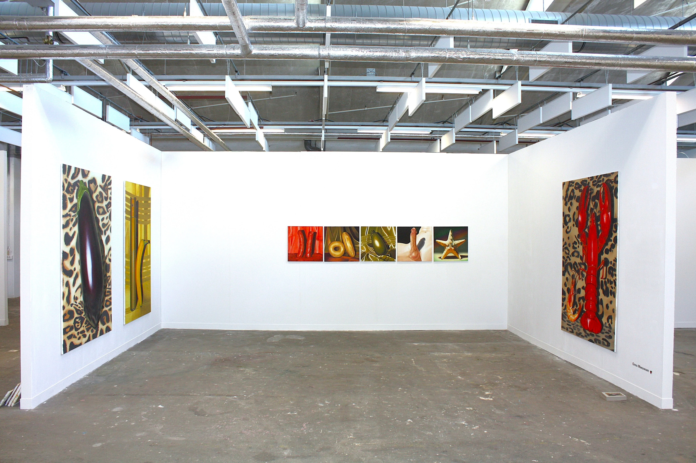
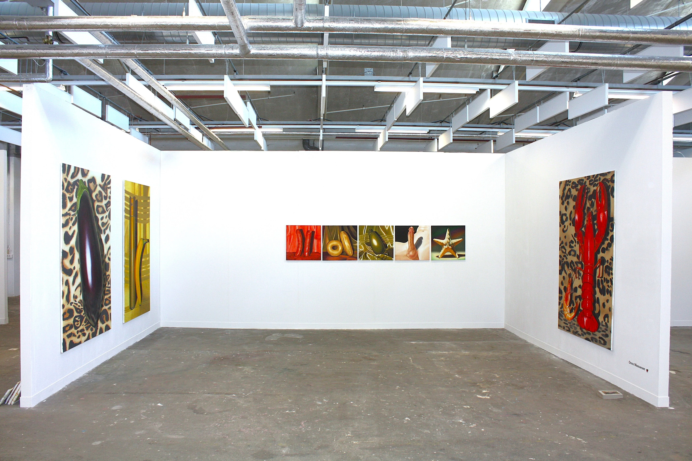
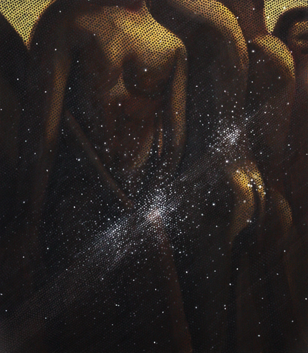
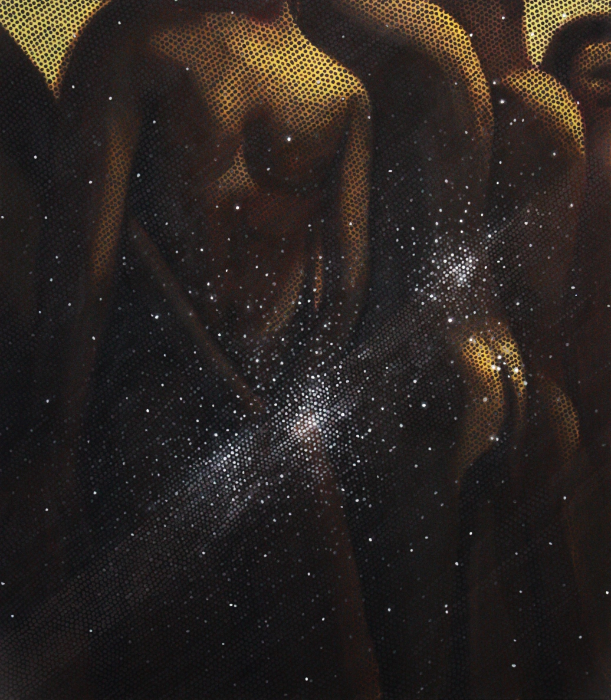

 



Artist Statement
Onno Meeuwsen’s work explores queer intimacy, desire, and self-perception in the digital age, with a focus on social media and hookup culture. Over the past year, Grindr has been his biggest source of inspiration—an app designed to connect queer men but one that often fosters detachment and objectification. His paintings reflect this reality, exploring how users communicate, present themselves, and engage with one another in this digital space.
Symbolism plays a key role in his work, mirroring the coded language often used within queer spaces. Grindr itself is filled with symbolic language, both visual and written—an eggplant isn’t just an eggplant, and traffic signs aren’t just street markers. These symbols communicate desires and identity without words. Meeuwsen’s still-life paintings transform everyday objects into characters that embody intimacy, tension, and power. By balancing heavy subject matter with humor and irony, his work offers a nuanced reflection on contemporary queer experiences.
Meeuwsen initially saw Grindr as a way to connect with other queer men while coming to terms with his sexuality. Over time, he found himself caught in a cycle of seeking and escaping—using desire as a distraction, only to be left feeling empty. What started as casual exploration became increasingly compulsive, making it difficult to stop. In his final year of art school, he recognized that he wasn’t just struggling with unhealthy habits, but with sex addiction. Seeking professional help, he began unpacking his relationship with desire and intimacy, a process that now informs his artistic practice.
Rather than criticism, his work invites viewers to reflect on how sex, technology, and identity shape queer life today.